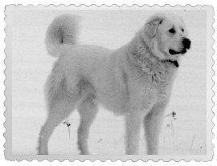
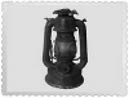
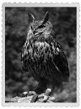
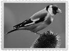
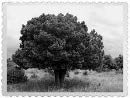
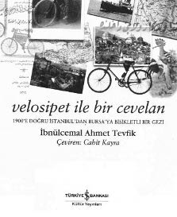

Akbaş Köpek
Çok zeki, cesur ve ailesine bağlı, Anadolu’ya özgü bir ırktır. Sürü koruma köpeği olarak yetiştirilmektedir. Bundan 3000 yıl önce üretildiği ve atalarının diğer çoban köpekleri olabileceği sanılmaktadır.

İdare Lambası
İdare lambası, sac veya tenekeden yapılmış bir aydınlatma aracıdır. Ters huniye benzer. Alt kısmındaki hazneye gaz yağı konulur. Bu hazneye bir fitil salınır. Fitil, gaz yağını bünyesine çeker ve kav ya da kibritle yakılarak geceleri aydınlanma sağlanır.

Puhu Kuşu (Bubo Bubo)

Puhu en iri baykuş türüdür. 70 cm uzunluğundadır. Uzun kulak püskülleri ve turuncu renkli kocaman gözleri vardır. Erkeğinden daha iri olan dişi puhunun kanat açıklığı 2 metreyi bulur. Çok büyük ve güçlü bir kuştur. Gececidir ve dağlarda yaşar. Genellikle kayalık alanlarla ormanlar ve uçurum çıkıntılarında yuva yapar.
Saka Kuşu (Carduelis Carduelis)

Güzel ötüşü ile tanınan bu kuş, özellikle devedikeni tohumları ile beslenir. Orman kenarlarında ve ağaçlık yerlerde ürer, üreme mevsimleri dışında sürüyle dolaşır. Meyve bahçeleri ve parklarda sık görülen kuşlardandır.
Anadolu Ardıcı

Üremesi için bir başka türe bağlıdır. Ardıç tohumları yere dökülür, ancak bu tohumlar bir ardıç kuşu tarafından yenmedikçe çimlenme gerçekleşmez. Ardıç kuşunun sindirim sisteminde ardıç ağacının tohumlarının kabukları açılır. Ardıç kuşunun dışkısı ile toprağa karışan tohumlar kolayca çimlenir. Çok dayanıklı ve Anadolu’ya özgü bir türdür.
Velosipet ile Bir Cevelan
Kitap ilk kez 1900 yılında Dersaadet Yuvanaki Panayotidis Matbaası’nda basılmıştır. 1890’lı yılların sonlarında, bisiklet meraklısı İstanbullu bir genç (İbnülcemal Ahmet Tevfik), Bursa ve çevresinde bir keşif gezisine çıkmaya karar verir. Geçeceği yolları önceden belirler; ziyaret edeceği şehirler ve kasabalar hakkında bilgiler derler. İstanbul’dan Mudanya’ya yaptığı gemi yolculuğundan, Bursa-İnegöl-Yenişehir-Bursa güzergâhındaki bisiklet turunu, tüm gezisini kayda geçirir. İstanbul’a döndükten sonra, 1900’de bastırdığı gezi notları, bize 20. yüzyılın eşiğindeki Bursa’nın renkli bir panoramasını çizer.
